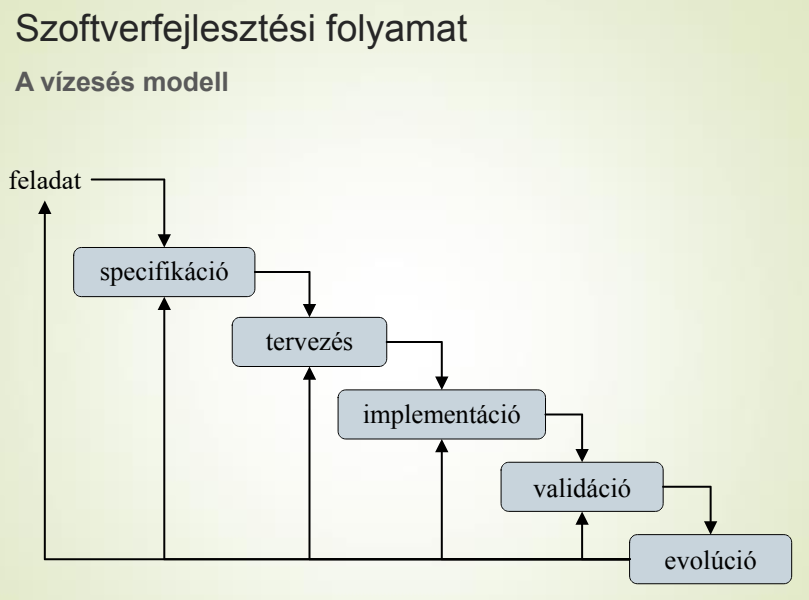
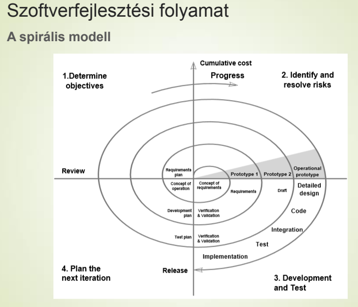
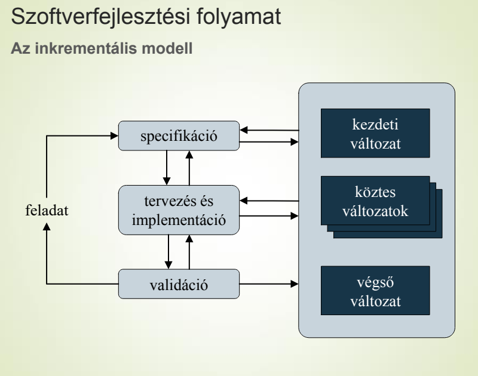
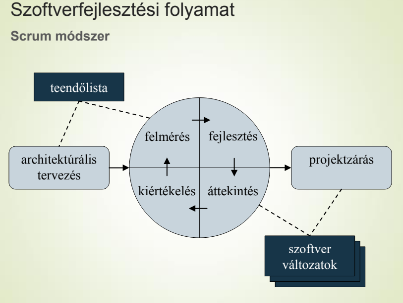
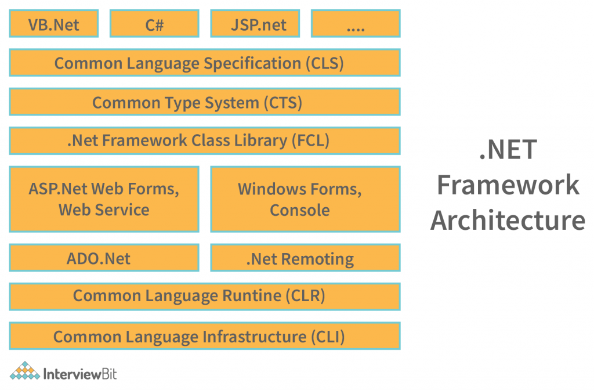
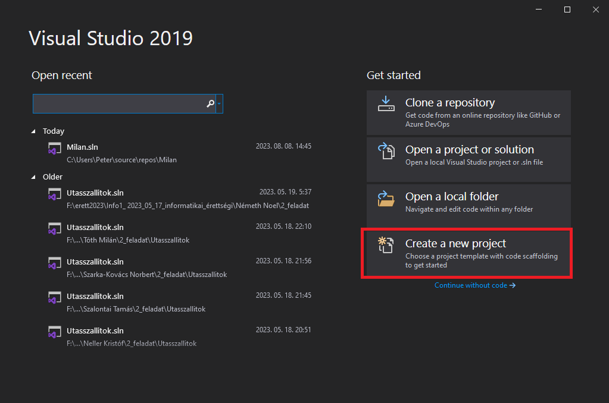
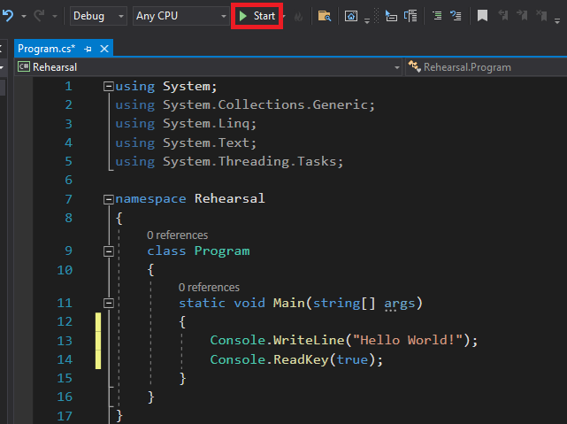
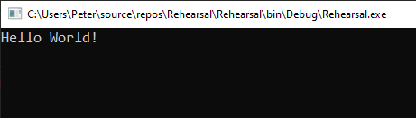
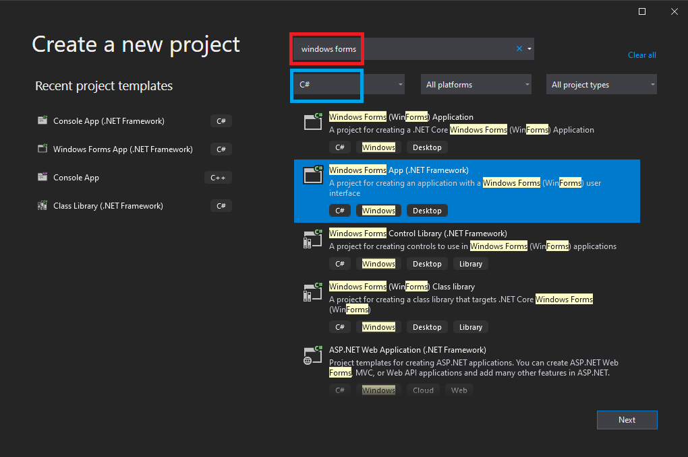
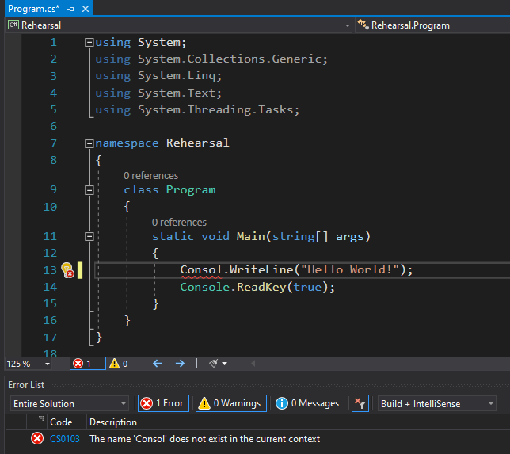

A témakör célja, hogy átfogó ismeretet adjon a diákoknak a modern szoftverfejlesztés általános lépéseiről, és a C# programozási nyelvnek az iparban világviszonylatban betöltött jelenkori helyzetéről. Feladata továbbá a programozási környezet megismertetése, a projektlétrehozás és egyéb előkészületi feladatok megismertetése, ami szükséges a későbbi, önálló programozási feladatokhoz.
- Hogyan fejlesszünk szoftvereket?
- A C# nyelv története, kialakulása és fejlődése.
- Mi az a .NET keretrendszer (framework)?
- A Visual Studio 2019 Community fejlesztőkörnyezet.
- Konzolos alkalmazás létrehozása.
- Grafikus alkalmazás létrehozása.
- Hibakeresés (debugging), breakpoint, step függvények
- Hogyan kódoljunk, hogy mások számára is értelmezhető legyen később is?
A szoftverfejlesztésen belül is léteznek paradigmák, azaz mindenki által elfogadott módszerek. Ezek is változnak az idővel, és újak is megjelennek. Nézzünk néhányat!
Vízesés modell:

Spirális modell:

Inkrementális modell:

Scrum módszer (agilis):

Részletesebb leírás a forrásokban!
Egy kis összefoglaló:
A C# (ejtsd: szí- sárp) a világ egyik legnépszerűbb objektumorientált programozási nyelve. Bár kissé fiatalabb, mint jól ismert társai, a Python, a PHP vagy a Java, a Windows alkalmazások és szerverek terén szinte egyeduralma van. Már a története is érdekes, ugyanis egy óriási informatikai persorozat eredményeként alkotta meg a nyelvet a Microsoft, tulajdonképpen dacból.
A Microsoft az ezredforduló előtt még a Sun Microsystems vállalat Java programnyelvét használta saját operációs rendszeréhez. Majd a 90-es években gondoltak egyet, és a Javát a Windows-hoz passzoló függvényekkel és szolgáltatásokkal kezdték el tuningolni. Csak sajnos engedély nélkül. A kreatív hack a bíróságon végződött, és végül közel kétmilliárd dollárjába került Microsoftnak. A Microsoft erre úgy döntött , hogy nincs szükségük a Sunra, tudnak ők saját keretrendszert és programozási nyelvet fejleszteni. Így is lett. Ez a Microsoft keretrendszer lett a .NET, a hozzá alkotott nyelv pedig a C#, ami az egyik legnépszerűbb programnyelvvé nőtte ki magát.
Anders Hejlsberg vezette a C# fejlesztését, ő volt az, aki a Turbo Pascal tervezésében is óriási szerepet vállalt. 1999-ben alakult meg az a csapat, amit a .NET programozási nyelvének kidolgozásával megbíztak. A nyelv kezdetben a COOL (C-like Object Oriented Language) nevet viselte, végül pedig 2000-ben mutatták be, akkor már C Sharp néven, a PDC konferencián a .NET-tel és az ASP.NET-tel együtt. A közönség fogadtatása vegyes volt: sokan úgy gondolták, a tervezők csupán lemásolták a Java-t, maga Anders azonban azt nyilatkozta, hogy a C++-hoz közelebb áll az új programnyelv.
Mi jellemzi a C#-ot?
Ez egy modern, objektumorientált nyelv, ami rugalmasan használható, akár nagyívű programok írásához is. Jellemzője, hogy modulokból, vagyis fordítási egységekből áll, melyek szerkezete azonos.
A programnyelvben az utasításokat követően pontosvesszőt kell tenni, ezzel lehet jelölni a határokat. Lényeges, hogy a kis és nagybetűk is jelentőséggel bírnak, a változók az angol ABC betűi lehetnek, illetve jelek és számok, ékezeteket azonban tilos használni. A blokkokat kapcsos zárójellel kell jelölni. Minden blokk nyitánya és zárása egy kapcsos zárójel.
A C#-pal rokon nyelvek:
A legtöbb más objektumorientált programozási nyelvhez hasonlóan a C nyelvből származik. Ennek továbbfejlesztett változata a C++ nyelv. Ebbe a körbe sorolható még a Visual Basic nyelv is.
A C# nyelven írt kódokat .cs kiterjesztésű állományokba mentjük el.
A C# egy keresztplatformos (platformfüggetlen, cross-platform) programozási nyelv. Ezt azt jelenti, hogy a forráskódból készül egy közbenső nyelven (Intermediate Language IL) írt kód. Ezt több más dologgal egy szerelvénybe (assembly) kerül eltárolásra .exe, vagy legtöbbször .dll kiterjesztéssel. Ezt adja át a rendszer a Common Language Runtime-nek (CLR) futtatásra. Ez a CLR a legtöbb operációs rendszerre feltelepíthető (a Windows-on alapból fent van), ez adja a platformfüggetlenséget. Ezután a Just-In-Time fordító (JIT compiler) elkészíti a gépi kódot, felhasználva a Base Class Library-ben (BCL) és Framework Class Library-ben (FCL) lévő osztályokat.
A fentebb felsorolt eszközök mind a .NET keretrendszer (framwork) részei több más dologgal együtt.

Most, hogy néhány fogalommal megismerkedtünk a C# fejlesztés világából, folytassuk az ismerkedést a legfontosabb területtel, a fejlesztői környezettel (IDE). Ehhez a Visual Studio 2019 Community Edition-t fogjuk használni. Kint van már a 2022-es verzió is, de pillanatnyilag nekünk elég lesz csak a 2019-es. Ami ebben megoldható, az megoldható az újabb verzióban is.
A Visual Studio 2019/2022 Community használatához érvényes Microsoft fiókkal kell rendelkezni! Mindenki hozzon létre egyet, ha még nincs!
A mellékelt videó-hoz kapcsolódóan csak annyit, hogy kezdetben csak a .NET desktop development-re van szükségünk, így csak azt jelöljük be, ezzel spórolva a háttértárral! Ha kell a későbbiekben valami, azt is könnyen telepíthejük az Visual Studio Installer segítségével, ami a szerkesztővel együtt települ a gépünkre.
Indítsuk el a Visual Studio 2019 alkalmazást. Majd kattintsunk a Create a new project gombra!

Ezután a megnyíló ablakba írjuk be a console kifejezést a keresőbe és válasszuk ki a nyelvek közül a C#-ot, és a .NET Framework-os verziót:

Adjunk nevet a projektünknek, állítsuk be a mentés helyét, majd nyomjuk meg a Create gombot!

Írjuk be a 13-14. sort, majd nyomjuk meg a kis zöld jobbra mutató háromszöget. A megnyíló konzolon láthatjuk a kiírást.


A Console.ReadKey(true); sorra azért van szükség, hogy a konzol ablaka ne zárodjon be azonnal.
Indítsuk el a Visual Studio 2019 alkalmazást. Majd kattintsunk a Create a new project gombra!
Ezután a megnyíló ablakba írjuk be a windows forms kifejezést a keresőbe és válasszuk ki a nyelvek közül a C#-ot, és a .NET Framework-os verziót:

Adjunk nevet a projektünknek, állítsuk be a mentés helyét, majd nyomjuk meg a Create gombot!
Megkapjuk az alap winform-os kezdő űrlapunkat (form).

Elkezdhetjük felpakolni a különböző vezérlőelemeket.
A Python-nál megismert hiba definíciók itt is érvényesek. A szintaktikai hibákat a Visual Studio is azonnal jelzi, míg a szemantikai hibákhoz ott van a hibakeresés, azaz debuggolás. Ehhez nézzük meg a következő videót!
A szintaktikai hibát piros aláhúzással jelzi a szerkesztő, valamint alul megjelenik egy Error List ablak, ahol leírja a hibák helyét és jellegét. A figyelmeztetéseket (Warnings) is itt kapjuk meg.

Mint minden más nyelvben a C#-ban is vannak jelölési konvenciók, amit a Visual Studio keményen be is tartat velünk:
clear_all Minden utasítást a a pontosvessző ; karakterrel zárunk le!
clear_all A kód tömbjeinek jelölésére használjuk a {} zárójelpárt!
clear_all Hatókörök jelölésére behúzások használata!
clear_all A változók nevét mindig kisbetűvel kezdjük és utána a CamelCase-t használjuk, azaz vonjuk össze egy szóba a több szóból álló neveket és a második szótól kezdve minden szót nagy kezdőbetűvel írunk. Csak angol betűket használjunk: almafaVirag, nagyonSzepAuto, hosszuValtozoNev.
clear_all A metódusok, osztályok nevét nagybetűvel kezdjük, azután CamelCase-t használunk.
clear_all A szöveg tagolására használjuk az úgynevezett "fehér szóköz karaktereket" (white-space characters): space (' '), tab ('\t'), newline (line feed) ('\n'), (carriage return, form feed, vertical tab).
clear_all Minden vezérlési szerkezetnek saját szintaktikája van.